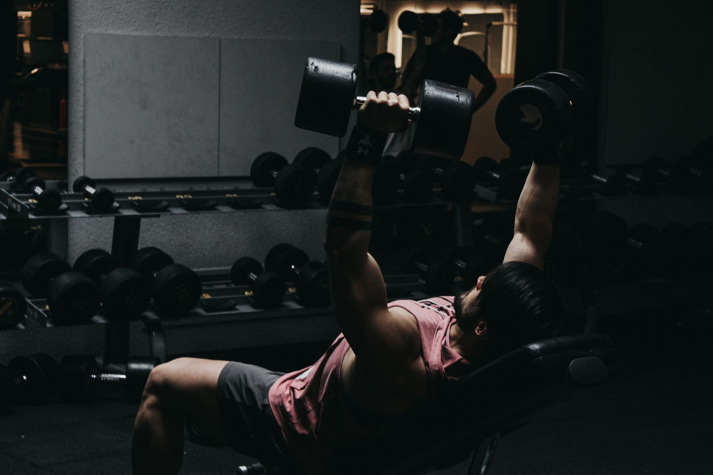

Каждый новичок в тренировках рано или поздно упирается в один и тот же выбор: сначала набрать мышцы или сначала сбросить жир? И набор массы (питание с профицитом калорий для роста мышц), и сушка (питание с дефицитом для потери жира) работают — но начало не с той фазы для вашей ситуации может означать месяцы разочарования до того, как вы увидите желаемый прогресс.
Что на самом деле делает каждая фаза
Набор массы означает питание выше поддерживающих калорий, обычно с умеренным профицитом 200-500 ккал в день, чтобы дать дополнительную энергию и белок, нужные для роста новой мышечной ткани вместе с силовыми тренировками. Сушка означает питание ниже поддерживающего уровня, в дефиците, чтобы терять накопленный жир, пока силовые тренировки помогают сохранить как можно больше существующих мышц. Ни одна фаза изначально не «лучше» — они служат разным целям в зависимости от стартовой точки и цели.
Аргументы за сушку сначала
Если сейчас у вас больше жира, чем комфортно, сушка сначала имеет практический смысл по нескольким причинам. Набор мышц поверх более высокого стартового процента жира обычно выглядит менее впечатляюще даже при росте мышц, так как добавленные мышцы частично скрыты существующим жиром. Сушка сначала также часто улучшает чувствительность к инсулину и то, как тело распределяет питательные вещества, что может сделать последующую фазу набора более эффективной в направлении калорий именно в мышцы, а не в жир.
Аргументы за набор массы сначала
Если вы уже стройны — часто называемые пороги: примерно менее 15% жира для мужчин или 25% для женщин — дальнейшая сушка даёт убывающую отдачу и может сделать тренировки истощающими без особой пользы для здоровья или внешнего вида. Для стройных новичков или людей, возвращающихся к тренировкам после перерыва, приоритизация роста мышц сначала, пока процент жира ещё в разумном диапазоне, часто более эффективный путь.
Рекомпозиция тела: альтернатива строгим фазам
Для определённых групп одновременная потеря жира и набор мышц реально достижимы — это называется рекомпозицией тела. Обычно лучше всего работает для настоящих новичков (чьи тела очень эффективно реагируют на новый тренировочный стимул), людей, возвращающихся к тренировкам после значительного перерыва, и тех, у кого больше жира для потери (у них больше запасённой энергии для питания роста мышц даже при дефиците калорий). Становится всё сложнее по мере роста тренировочного опыта, поэтому более опытным атлетам обычно нужно выбрать чёткую фазу набора или сушки, а не пытаться делать оба бесконечно.
Сколько должна длиться каждая фаза?
Фазы набора обычно длятся 3-6 месяцев — достаточно, чтобы добиться значимого прироста силы и мышц без чрезмерного накопления жира. Фазы сушки обычно короче, 2-4 месяца, как потому, что длительные дефициты сложнее поддерживать очень долго, так и потому, что большинству целей сушки (достижение конкретного целевого процента жира) не требуется намного больше времени. Обе фазы выигрывают от планирования с примерным сроком и конечной целью, а не оставления полностью открытыми.
Потеряю ли я все мышцы при сушке?
Нет — это распространённый страх, не соответствующий тому, как реально работает хорошо выполненная сушка. При достаточном потреблении белка (обычно 1,6-2,2г на кг веса тела) и продолжении силовых тренировок на протяжении дефицита большая часть мышечной массы сохраняется даже при значимой фазе потери жира. Небольшие колебания силы при сушке — это нормально, но значительная потеря мышц — скорее признак слишком агрессивного дефицита или недостаточного белка и тренировочного стимула, чем неизбежная часть самой сушки.
Как решить, с какой фазы начать
Практический ориентир: если вы можете ущипнуть больше дюйма жира на талии и недовольны текущим составом тела, начните с сушки. Если вы уже достаточно стройны и ваша главная цель — видимый рост мышц и силы, начните с набора. Если вы настоящий новичок в силовых тренировках независимо от текущего процента жира, рекомпозиция тела через умеренный, устойчивый подход — небольшой дефицит или поддерживающие калории с сильным акцентом на тренировки и белок — разумный способ прогрессировать по обоим направлениям одновременно, прежде чем в итоге перейти к более определённой фазе.
Частые вопросы
При каком проценте жира стоит начинать набор массы?
Строгого правила нет, но многие тренеры советуют мужчинам оставаться примерно ниже 15-18% жира, а женщинам ниже 25-28% перед началом набора, чтобы ограничить лишний набор жира при профиците.
Могут ли новички набирать мышцы и терять жир одновременно?
Да — это называется рекомпозицией тела, и это реально достижимо для новичков, нетренированных людей, возвращающихся после перерыва, или людей с большим запасом жира для потери, хотя это становится сложнее по мере роста тренировочного опыта.
Сколько должна длиться фаза набора или сушки?
Набор обычно длится 3-6 месяцев, сушка — 2-4 месяца, хотя это варьируется в зависимости от индивидуальных целей и того, сколько жира нужно набрать или потерять.
Потеряю ли я все мышцы, если начну сушку?
Нет — хорошо выполненная сушка с достаточным потреблением белка и продолжением силовых тренировок сохраняет подавляющую часть мышечной массы даже при значительном дефиците калорий.